Klinik Akupunktur Kesehatan & Kecantikan · Padang
Kembalikan Keseimbangan Tubuh, Secara Alami & Profesional
QISA Akupunktur telah melayani masyarakat Padang sejak Januari 2024. Seluruh terapi ditangani langsung oleh Akupunktur Terapis bersertifikat dan berizin praktik (SIP), menggunakan jarum steril sekali pakai, sehingga Anda dapat menjalani terapi dengan aman dan nyaman.
SIP
Terapis Tersertifikasi
100%
Jarum Steril Sekali Pakai
2024
Melayani Sejak
2
Kesehatan & Kecantikan
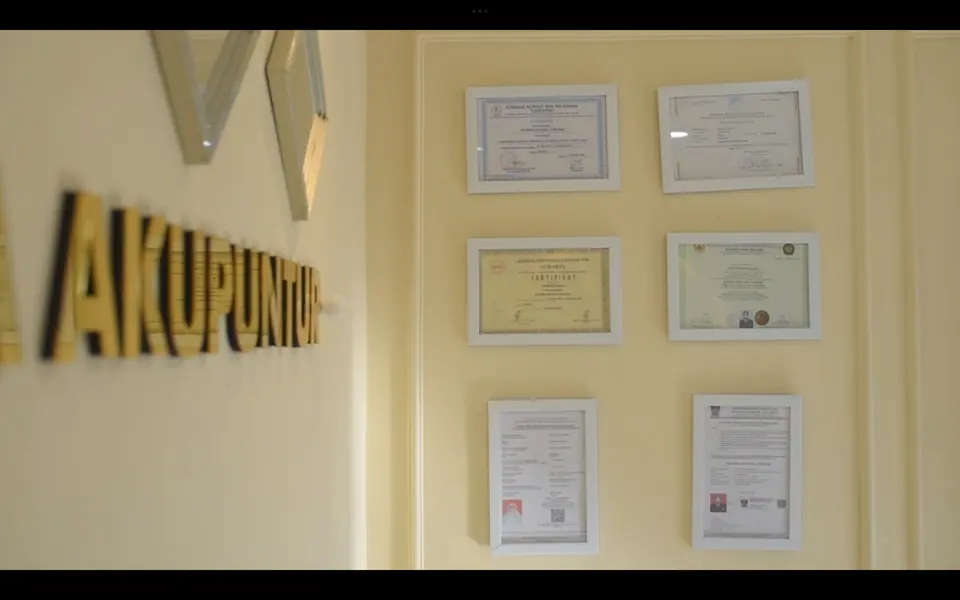
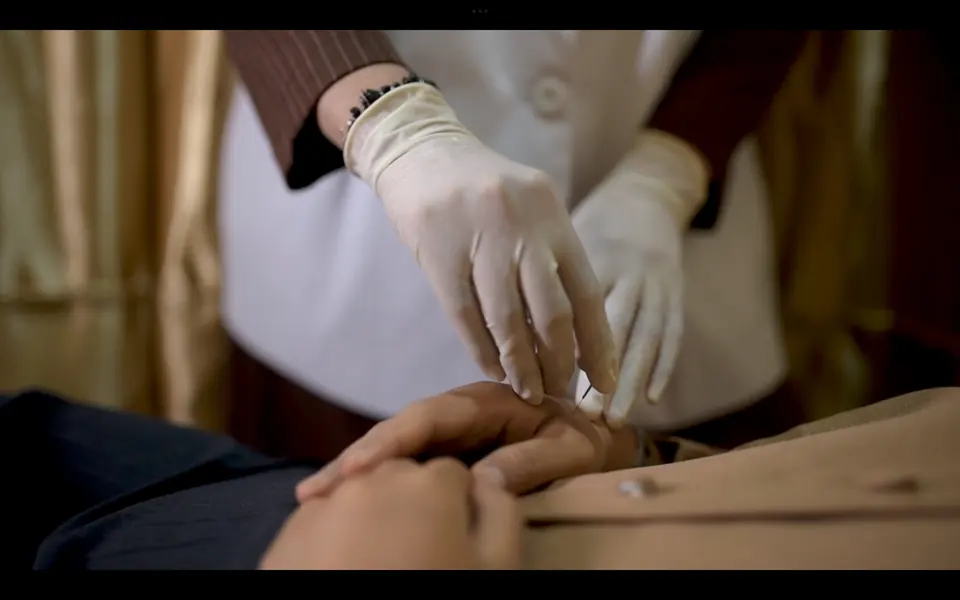
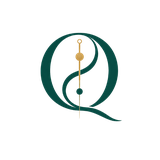
FilosofiLogo QISA
Tentang Kami
Klinik Akupunktur yang Mengembalikan Harmoni Tubuh dari Dalam
Huruf Q pada logo QISA mewakili "Qi", energi kehidupan dalam konsep penyembuhan tradisional. Lengkung yin-yang di dalamnya melambangkan keseimbangan antara tubuh, energi, kesehatan, dan kecantikan.
QISA Akupunktur telah melayani masyarakat sejak Januari 2024 dengan komitmen menghadirkan pelayanan kesehatan yang profesional, aman, dan berkualitas. Seluruh layanan ditangani oleh Akupunktur Terapis tersertifikasi yang memiliki Surat Izin Praktik (SIP), berlokasi strategis di Jalan S. Parman No. 110, Padang.
Jarum Steril Sekali Pakai
Personal & Holistik
Lokasi Strategis
Ramah & Edukatif
3
Jenis Layanan
13
FAQ Terjawab
100
% Jarum Steril
Layanan
Terapi yang menggabungkan pendekatan tradisional dengan praktik profesional, disesuaikan dengan kebutuhan setiap pasien
Akupuntur Kesehatan
Menstimulasi titik-titik tubuh dengan jarum steril halus untuk mengoptimalkan fungsi tubuh, meningkatkan sirkulasi, dan mendukung pemulihan alami. Cocok untuk nyeri otot, migrain, insomnia, dan gangguan pencernaan.
Konsultasi Sekarang
Umum & Facelift
Akupuntur Kecantikan
Perawatan wajah alami tanpa bedah yang merangsang sirkulasi darah dan regenerasi kulit dari dalam. Tersedia Akupuntur Kecantikan Umum dan Akupuntur Facelift (efek lifting alami tanpa operasi).
Konsultasi SekarangBekam Api
Terapi tradisional dengan kop bertekanan vakum dari panas, dilakukan sesuai prosedur aman oleh terapis kompeten. Membantu melancarkan sirkulasi darah dan meredakan ketegangan otot.
Konsultasi Sekarang
SIP
Terapis Berizin
100%
Jarum Steril
3
Jenis Terapi
2024
Berdiri Sejak
Kecantikan Umum vs. Facelift
Dua pendekatan berbeda untuk kebutuhan yang berbeda pula
| Aspek | Kecantikan Umum | Facelift |
|---|---|---|
| 1. Fokus Utama | Mencerahkan & menjaga kesehatan kulit. | Mengencangkan (lifting) wajah secara alami. |
| 2. Jumlah Jarum | Standar pada titik utama wajah (20–30 jarum). | ±100–150 jarum halus. |
| 3. Cocok Untuk | Kulit kusam, jerawat, pori besar, mata panda. | Kulit kendur, garis halus, double chin. |
| 4. Durasi | ±25 menit. | ±1 jam 20 menit. |
Kondisi yang Ditangani
Dari nyeri otot hingga gangguan tidur — telusuri kategori keluhan untuk melihat apa yang bisa dibantu QISA
- Semua
- Otot & Sendi
- Saraf
- Tidur & Psikologis
- Pencernaan
- Kesehatan Wanita
- Kulit & Estetika
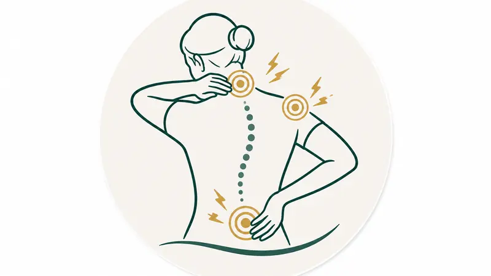
Otot & SendiNyeri Leher, Bahu & Pinggang
Termasuk leher kaku, frozen shoulder, nyeri punggung, dan nyeri lutut.
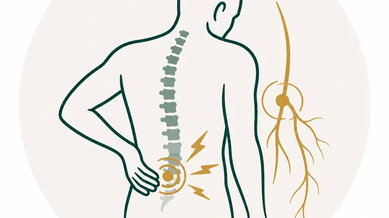
Otot & SendiSaraf Terjepit & Cedera Olahraga
HNP, sciatica, keseleo, kram otot, hingga tennis elbow.
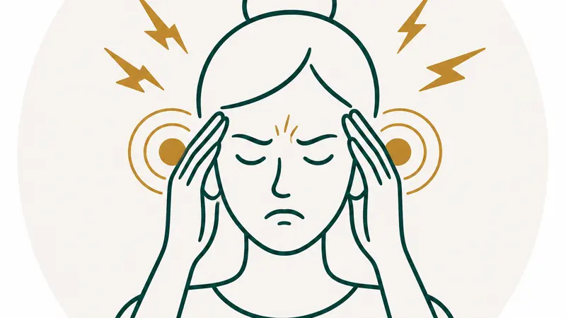
SarafMigrain & Sakit Kepala
Termasuk sakit kepala tegang, vertigo, dan gangguan keseimbangan.
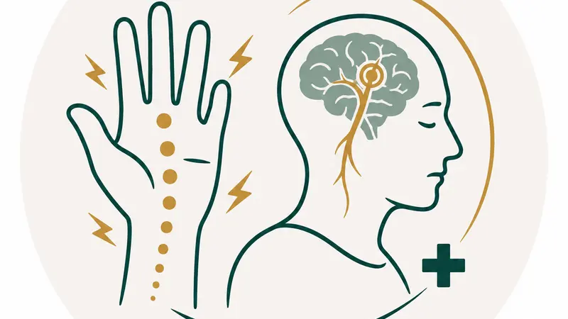
SarafKesemutan & Pemulihan Pasca Stroke
Termasuk mati rasa, neuropati diabetik, dan kekakuan pasca stroke.
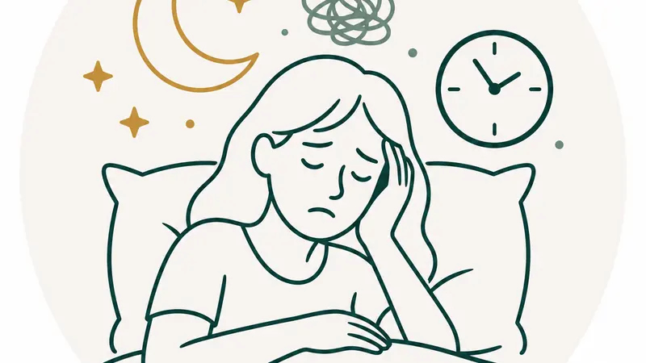
Tidur & PsikologisInsomnia & Sulit Tidur
Tidur tidak nyenyak hingga mudah terbangun saat tidur.
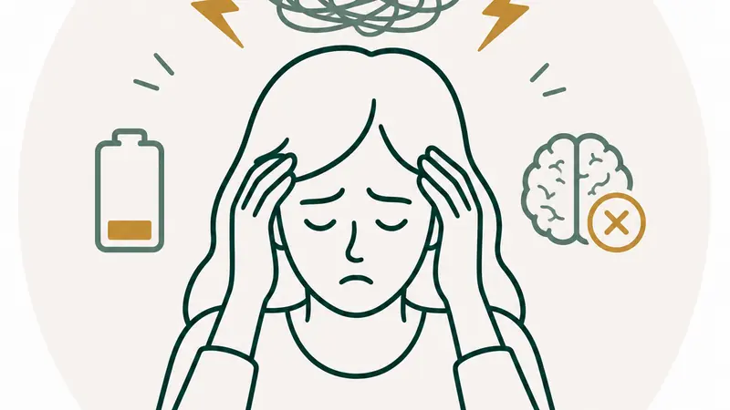
Tidur & PsikologisStres, Cemas & Burnout
Termasuk kelelahan kronis dan gangguan konsentrasi.
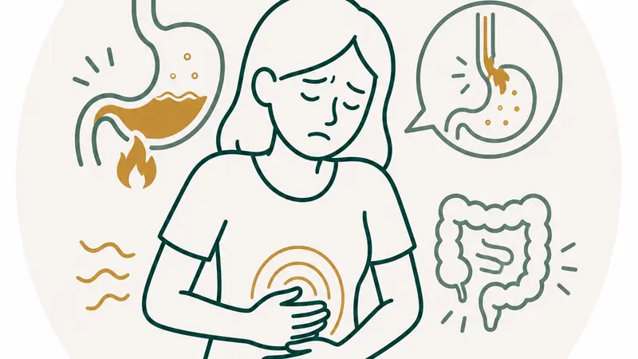
PencernaanMaag, GERD & Perut Kembung
Termasuk gastritis, mual, dan nafsu makan menurun.
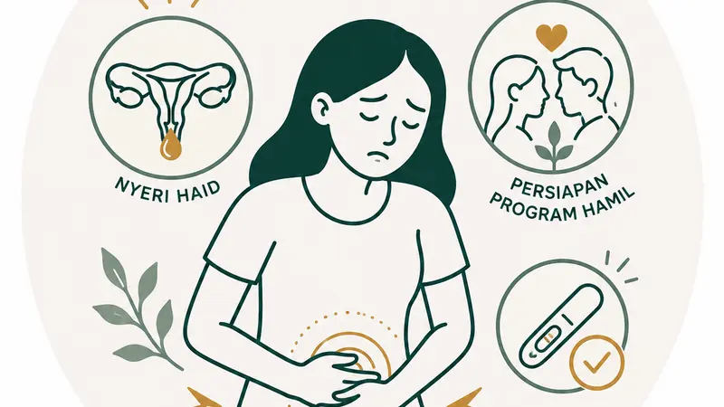
Kesehatan WanitaNyeri Haid & Persiapan Program Hamil
Termasuk haid tidak teratur dan pemulihan pasca melahirkan.
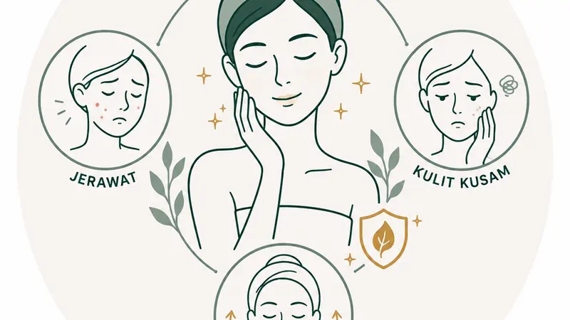
Kulit & EstetikaJerawat, Kulit Kusam & Anti-Aging
Termasuk bekas jerawat, kerutan wajah, dan gatal kronis.
Catatan Penting
Akupuntur adalah Terapi Komplementer
Dilakukan oleh terapis bersertifikat dan berizin praktik. Penanganan disesuaikan dengan hasil konsultasi dan pemeriksaan awal. Pada kondisi tertentu, pasien mungkin memerlukan kolaborasi dengan dokter atau tenaga kesehatan lain.
Kenapa QISA
Alur terapi yang aman, personal, dan dirancang agar hasilnya optimal untuk setiap pasien
Prioritas Utama
Higienis & Steril
Jarum akupuntur steril sekali pakai untuk setiap pasien, dibuang sesuai standar limbah medis.
Terapis Bersertifikat
Seluruh tindakan dilakukan oleh Akupunktur Terapis dengan Surat Izin Praktik (SIP).
Penanganan Personal
Setiap terapi disesuaikan hasil konsultasi dan kondisi masing-masing pasien.
Alur Terapi di QISA
1
Konsultasi
Diskusi keluhan & riwayat
2
Pemeriksaan
Menentukan titik terapi
3
Terapi
Jarum steril, nyaman
4
Evaluasi
Rekomendasi lanjutan
Kredensial Kami
Surat Izin Praktik (SIP)
Legalitas resmi tenaga kesehatan yang menangani setiap pasien.
Sertifikasi Akupunktur
Kompetensi teruji sesuai standar praktik akupunktur.
Alat & Prosedur Aman
Jarum steril sekali pakai, dikelola sesuai standar limbah medis.
Testimoni
Dipercaya oleh mereka yang sudah merasakan manfaat terapi di QISA
Kenalan dengan Terapis
Ditangani langsung dengan penuh perhatian oleh satu terapis yang sama di setiap kunjungan
Akupunktur Terapis
Salsabila Fauzana A.Md.Akup
Sertifikasi & Surat Izin Praktik (SIP)
Terapis QISA Akupunktur merupakan lulusan ITSK RS dr. Soepraoen Malang yang telah mendirikan dan mengembangkan QISA Akupunktur sejak tahun 2024.
SIP
Terverifikasi
2024
Berdiri
100%
Steril
FAQ
Pertanyaan yang sering ditanyakan sebelum menjalani terapi pertama
Pada umumnya tidak sakit. Saat jarum pertama kali masuk, sebagian pasien
mungkin merasakan sensasi seperti dicubit ringan yang berlangsung sesaat. Kami menggunakan jarum steril
sekali pakai yang sangat tipis, sehingga rasa tidak nyaman umumnya minimal.
Ya. Seluruh jarum di QISA Akupunktur adalah jarum steril sekali pakai — setiap
pasien menggunakan jarum baru, dan langsung dibuang setelah terapi sesuai standar pengelolaan limbah
medis.
Seluruh tindakan dilakukan oleh Akupunktur Terapis yang tersertifikasi dan
memiliki Surat Izin Praktik (SIP), sesuai standar pelayanan kesehatan.
Umumnya aman bila dilakukan tenaga kesehatan kompeten. Sebagian kecil pasien
bisa mengalami lebam ringan, sedikit pegal di titik terapi, atau rasa mengantuk — bersifat sementara dan
biasanya membaik dalam beberapa hari.
Aman bila dilakukan terapis kompeten. Sebagian besar pasien dapat langsung
beraktivitas; pada beberapa orang dapat muncul lebam ringan di wajah yang bersifat sementara.
Sebagai gambaran: Akupuntur Kesehatan ± 25 menit, Akupuntur Kecantikan ± 25
menit, Akupuntur Facelift ± 1 jam 20 menit. Durasi dapat disesuaikan setelah konsultasi.
Jangan datang dalam keadaan perut kosong atau terlalu kenyang, gunakan pakaian
nyaman, istirahat cukup, dan informasikan riwayat penyakit, obat yang dikonsumsi, atau kondisi khusus
seperti kehamilan.
Sangat disarankan melakukan reservasi via website sebelum datang agar
mendapat jadwal sesuai dan tidak perlu menunggu lama.
Berbeda pada tiap pasien tergantung jenis keluhan, tingkat keparahan, dan
respons tubuh. Terapis akan merekomendasikan jumlah dan frekuensi setelah konsultasi.
Boleh. Terapi dapat diberikan dengan teknik dan pendekatan yang disesuaikan
usia, kondisi kesehatan, dan hasil konsultasi.
Respons setiap orang berbeda — ada yang merasakan perubahan setelah satu kali
terapi, ada yang butuh beberapa sesi untuk hasil optimal.
Ya, sebagian besar pasien dapat langsung beraktivitas. Disarankan memperbanyak
minum air putih, istirahat cukup, dan menghindari aktivitas fisik berat beberapa jam setelah terapi.
Kontak
Reservasi melalui link reservasi agar mendapat jadwal yang sesuai
Hubungi Kami
Mari Mulai Perjalanan Sehat Anda
Konsultasikan keluhan Anda dengan terapis kami sebelum menentukan jenis terapi yang paling sesuai.
Alamat
Jl. S. Parman No. 110, Padang
Jam Operasional
Setiap hari kecuali jumat pukul 11.00 - 18.00
100%
Steril
SIP
Terverifikasi
2024
Sejak